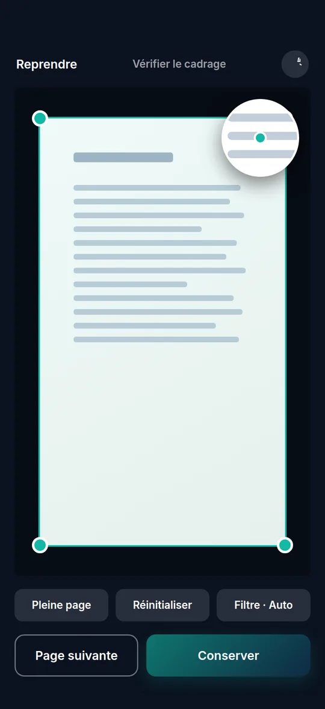
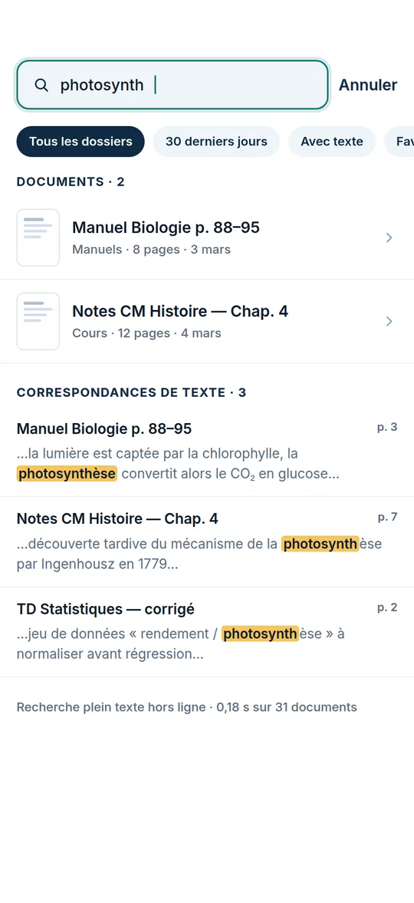
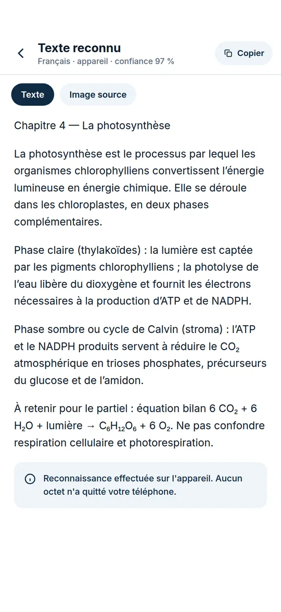

Paper in, searchable PDF out. The phone keeps the rest.
Liasse scans a page with the platform's own edge detection, straightens and cleans it, reads the text on the device and files it in a local library you can search word by word. It works with no network, and nothing is sent anywhere unless you connect your own Google Drive.
app/, plus the layoutThree ways in, one batch that survives a phone call.
Every capture lands in a draft batch that is written to SQLite as it grows. If the app is killed mid-scan, the library shows a "Reprendre la numérisation" banner and the pages are still there.
The platform scanner
The primary path opens Google's ML Kit document scanner through react-native-document-scanner-plugin. It finds the page, corrects perspective and hands back straightened pages. Liasse does not ship its own edge detector.
The in-app camera
A Vision Camera screen with flash (auto, torch, off), a composition grid and four modes: Document, Carte ID, Reçu, Tableau blanc. It is also the fallback when the ML Kit scanner cannot start.
Gallery import
Uses the system photo picker, so no storage permission is needed. Non-JPEG images are converted; formats the renderer cannot decode, such as HEIC, are refused with a message.
The batch grid has three columns with index badges, drag to reorder (with TalkBack move actions as well), tap to crop, and delete with a five-second undo snackbar. Saving copies the files into the document folder and clears the inbox only after the database transaction commits, so a failed save leaves the batch intact.
Drag a corner. The original never changes.
The crop screen stores four corners, a rotation and a look for each page, and re-derives the render from the untouched original. Below is the same maths as src/lib/geometry.ts: an 8-unknown homography, a convexity check that stops a handle before the outline folds, and a 2.5× loupe that jumps to the opposite side of your finger.
Handles are 22 px visually with 44 px hit targets. Keyboard: focus a corner, then use the arrow keys (Shift for bigger steps). The photo is generated in your browser; it is not a capture from the app.
Render size uses outputSize(): the longer of each pair of opposite edges, for a 3000 × 3600 px photo, capped at 4000 px. "Fit the page" is a demo shortcut; in the app the ML Kit scanner does detection.
Six looks, each one a 4×5 colour matrix.
Filters and the brightness, contrast and sharpness sliders compose into one matrix plus an optional sharpen kernel, rendered with Skia in the app. SVG's feColorMatrix uses the same layout, so the numbers below are the app's own, applied live in your browser.
Edits are stored per page and the render is regenerated from the original, so changing a look never touches the recognised text. Scanner pages start on "Original" (ML Kit already enhanced them); camera and gallery pages start on the default from Settings, "Auto".
Type four letters of a word you wrote on page 7.
After saving, a background queue persisted in SQLite runs ML Kit text recognition (Latin script, on the device) on every page. Text, per-line boxes and confidence are stored; triggers feed an FTS5 index. One field then searches names, folders, tags and the text itself.
Sample library of 5 documents written for this page. The matching rules are the app's.
What the app does with your query
- Folds case and accents first, so
recufinds "Reçu" andelevefinds "élève". - Splits into at most 8 tokens; every token must match, each as a prefix:
factfinds "facture". - Quotes every token before it reaches FTS5, so typed operators such as
ORor*are searched as text, never run as syntax. - Groups text hits by page with a highlighted snippet and the page number; tapping one opens the document on that page.
The OCR screen shows the recognised text as selectable text with an average-confidence figure, a toggle back to the source image, copy-all, a low-confidence warning and retry on failure. A Settings row states that cloud OCR is off and processing is 100 % on the device; there is no cloud OCR in the code.
A PDF you can search outside the app.
PDFs are assembled in plain JavaScript with pdf-lib. Each page is fitted inside A4 with no margins, the JPEG is embedded as-is at "Haute" quality, and recognised lines are laid invisibly at their true position, so the text can be selected and searched in any PDF reader. The planner below runs the same rules as src/lib/exportPlan.ts.
The sheet also shows a live size estimate: exact for "Haute" PDF and JPEG (the stored files), otherwise the first page is encoded for real and the ratio applied to the rest. Password protection is listed as Premium and is not available yet.
No account. No server. One permission.
There is no Liasse backend. Every item below is enforced in the code or the Android manifest configuration, not just promised in copy.
- 01
The camera is the only dangerous permission
Microphone, overlay and external storage permissions pulled in by templates and libraries are explicitly blocked, as is media access added by the screen-capture module.
- 02
Recognition stays on the phone
OCR uses ML Kit's on-device Latin model. A config plugin strips ML Kit's telemetry endpoint from the manifest; recognition is unaffected.
- 03
App lock with the phone's own unlock
Fingerprint, face or device PIN. Locks at cold start and after 30 s in the background. While on, screenshots and the recent-apps preview are blocked.
- 04
Bounded exceptions for its own flows
The scanner may keep the lock off for up to 10 minutes, the photo picker, share sheet and Google sign-in for 2, and only for one trip away from the app.
- 05
Backup is opt-in and goes to your Drive
Two non-sensitive scopes. Originals and manifests go to a hidden app folder; a readable PDF per document goes to a visible "Liasse" folder. Wi-Fi only by default.
- 06
What comes back from Drive is untrusted
Manifests are rebuilt field by field: plain ids only, edits in range, size caps, nothing claiming another document's files.
- 07
Android Auto Backup is off
Its 25 MB cap could restore a database without its images, so the app relies on its own backup instead.
- 08
Diagnostics you export yourself
A report of counts, dates and durations, shared from Settings by you. Never document names, text, images or the Google account address.
Images on disk, everything else in SQLite.
Page images live in the app's documents folder and are referenced by relative path, never stored as blobs. Metadata, edits, recognised text, the capture draft and the backup bookkeeping sit in one expo-sqlite database managed with Drizzle, 4 migrations so far.
Non-destructive by rule
The original capture is never overwritten. The render is derived from corners, rotation, filter and adjustments and can always be regenerated, which is how a restore from Drive rebuilds edited pages.
Deletes are undoable, not confirmed
Deleting a page or a document shows a five-second undo snackbar. Documents are soft-deleted and purged, with their whole folder, on a later start once the window has passed.
Kind to the UI thread
The worker waits for idle time and pauses between pages; renders use a GPU offscreen surface when available. A result is dropped if you edited the page while it was running.
Twelve screens, designed before they were built.
Liasse has its own "Slate & Teal" identity: navy for structure, teal for action, a bright teal reserved for the dark camera screens, amber only for highlights. The screens were first drawn as a clickable HTML prototype, then rebuilt natively in React Native with the prototype's French copy.



These are renders of the HTML design prototype, not screenshots of the app. Page thumbnails and illustrations in the prototype are placeholders, and some details differ from the shipped screens. No real captures from the phone are published yet.
Proven on one phone. Not in a store yet.
Logic is covered by Jest suites, including the database layer against a real SQLite engine and the Drive engine against a fake Drive. A Maestro flow drives capture to library on the emulator. The camera cannot be tested in a simulator, so slices were closed on a physical phone.
Test cases declared per Jest suite
Counted from test( and it( calls in __tests__/; two are parameterised, so Jest runs 154 tests. All 16 suites and 154 tests passed in a local run on 30 Oct 2026.
Phone test record, 26 Oct 2026
Samsung Galaxy A17 on Android 16, from the diagnostic report exported on the phone. Build 0.3.2, the same code as Liasse but still under the previous package name.
| Step | Logged result |
|---|---|
| Restore from Drive after reinstall | 4 restored, 0 failed |
| Renders rebuilt from restored edits | 3, 0.2–0.9 s each |
| ML Kit scan, saved to library | 1 page, saved in 2.6 s |
| On-device OCR | confidence 0.79, 0.76 s |
| PDF export, OCR layer on | 283 KB in 0.1 s |
| Library state at the end | 5 docs, 12/12 pages with text |
Batch reorder, other export formats, crop and filter edits, undo, search and the lock cycle were tested by hand on the same phone but are not in that log.
Liasse is built as signed Android release builds and tested on a real phone; the store listing does not exist yet. It was called ScanFlow until 23 October 2026, when the name turned out to be taken on Google Play. Everything is free today: a Premium paywall is built but switched off, and there is no watermark.
iOS: the stack is cross-platform, but no iOS build has been made or tested. The Google sign-in bridge used for Drive backup is Android only.
Builds
- 0.4.027 Oct
Final package id for the store, versionCode 7.
- 0.3.226 Oct
Diagnostic build used for the phone test record.
- 0.3.123 Oct
Renamed to Liasse; diagnostic report export in Settings.
- 0.3.020 Oct
Onboarding, full Settings, app lock, paywall (off). Not released: a startup crash was caught on the emulator and fixed in 0.3.1.
- 0.2.0 – 0.2.118–19 Oct
Drive backup and restore, Android 9 minimum, own app icon.